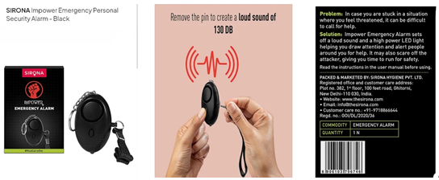

It is unfortunate that I must make an article about this but I feel it is really needed. We women are not safe anywhere, be it our home or workplace, places of worship or places like a bar/pub. Predators are always lurking in the shadows around us, waiting for the right time to pounce. It is in our hands to keep ourselves safe and here are some ways we can do it.
Fitness
Make sure you are in good physical health. Keep your cardiovascular strength in good shape (so that you can run) Eat healthy foods. If you are going out alone, carry comfortable footwear with you that you can change into during your commute. Learn self defence like how to get out from certain types of holds, etc. and keep practicing them to make sure you know how to use the skill during times of emergency.
Self Defence Gadgets
1. The most known gadget is pepper spray and it is very effective when its used properly. Look up videos on how to use it and practice with a spray water bottle. You’ve to aim for the eyes.
2. The next best option is Pain Relief spray. They come in travel sizes and are easily available everywhere, unlike pepper sprays. Again, AIM FOR THE EYE. You can also use a hairspray and a lighter and make a flamethrower. Melt the fuckers’ face off and RUN.
3. Pocket Knife- Keep a pocket knife/mini cutter with you while going out. As the name suggests, keep it in the pocket. Not in your purse, not in your backpack. Practice how to open in quickly and make sure the knife does not get stuck. Predators will not give you time to open it. Again, while travelling, knives are not allowed in certain countries. Your best option is metal cutlery like forks.
4. Pen/ Nail filer- You can use these simple everyday objects to injure someone and get enough time to run. Again, aim for the sensitive areas.
5. Portable Door Locks- They add additional security to your door if you are staying at a hotel. Carry them and use them correctly for added security. Before locking the doors, make sure to check the room and window locks.
6. Portable Emergency Alarms- There are portable keychain type alarms available that are made for self-defence. When used, they make a loud siren sound that can be used to scare off attackers. If heard for a long time, they can cause hearing loss so use with care.
7. High Powered Flashlights can be used to temporarily blind the attackers giving you enough time to RUN or call for help.
Emergency Preparation
Keep your emergency contacts updated. Every phone has a SOS option. Open it right now and update it. Learn and remember what buttons will send out SOS alerts to the police and to your loved ones. Keep it always activated. Put in your medical details in your phone like your blood group, allergies and relevant medical condition.
Location Tracking Apps can be used to keep your friends and family about your location. I use Life360. It shows me where each of my family members are at all points of time. Switch on your phone location while going out and keep at least 2 people informed of your whereabouts.
Important Contacts
When you need a fire brigade or an ambulance, you thus call the emergency number 112 (or 100). When you call the emergency number 112 in India for the police, you are redirected to the emergency number 100. Because of this, valuable time is saved for dialing multiple numbers.
To help the women in distress the Toll-free Help Line No. 103 is started in Mumbai, Thane & Navi Mumbai Police Units & rest of Maharashtra Toll-free Help Line No. 1091 is used.
Please save this number and download the 112 India Mobile app from Playstore.
* In case of women and children, you can use 112 India mobile App to activate SHOUT feature, which alerts registered volunteers in the vicinity for immediate assistance apart from activating ERC. THIS IS AN EMERGENCY FACILITY. USERS ARE ADVISED TO USE THIS SERVICE CAREFULLY.